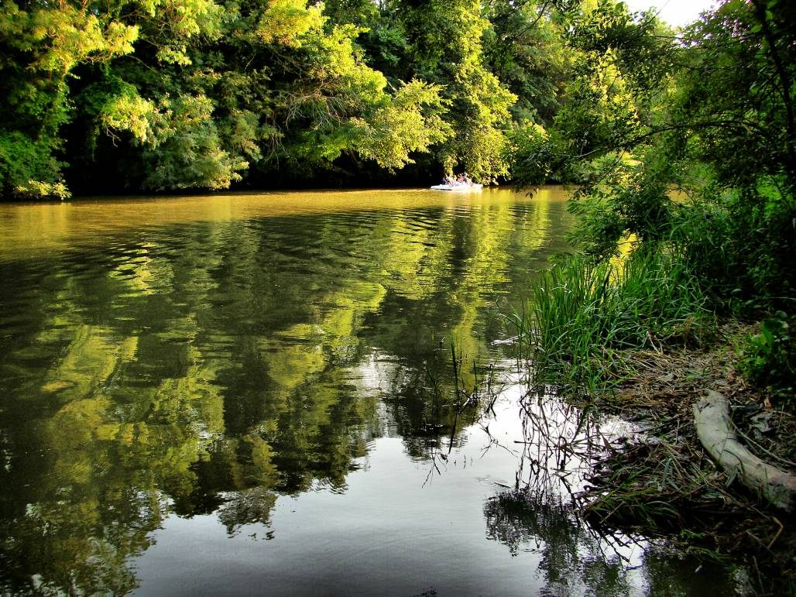

Река Камчия
Камчия е река в Североизточна България, област Варна – общини Дългопол, Долни чифлик и Аврен, вливаща се в Черно море. Дължината ѝ е 46 km, а заедно с лявата съставяща я река Голяма Камчия, която е приета за нейно начало – 244,5 km.
